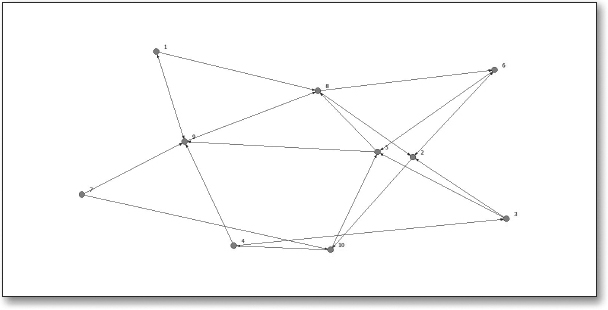

Unit 1 Readings: What is SNA?
ECI 589: SNA and Education
Our primary goal in this unit is to build a basic understanding of social network analysis (SNA) as an approach to understand and improve learning processes and outcomes. The required and self-selected readings provide an introduction to SNA in the field of education, including the historical, theoretical, and analytical foundations of a social network perspective. A secondary goal of readings and discussion is to help you start generating ideas for independent application of network analysis. As part of our discussion, you’ll be asked to generate a basic research question about a population of interest and that could be answered using relational data.
Readings
For Unit read chapters 1 and 2 from Social Network Analysis and Education [@carolan2014] and locate one additional research article, presentation, or informal study to help address our discussion questions for the week.
SNA and Education Part I: Theory and Concepts
The following readings for this unit illustrate how social network analysis provides educational researchers with a different way of thinking about and measuring an learning processes and outcomes by that explicitly account for the importance of one’s relationships with others, as well as the larger pattern in which these relationships are embedded.
Self-Selected Study
Use the NCSU Library, Google Scholar or search engine to locate a research or practitioner-focused article, presentation, or resource that demonstrates the application of social network analysis to study a context or topic of interest. You are also welcome to select one of the research papers listed in the syllabus or in our course text that may have peaked your interest. Your selection should address one or more of the discussion topics/questions (see below) and you’re welcome to identify SNA resources outside of the field of education.
Discussion
In lieu of the peer interaction and discussion of course materials that normally take place “in-class”, you’ll be asked to log in this week and engage with other members of our learning community through this discussion forum. With the exception of the Self-Selected Study questions, you are not required to address every guiding question, particularly if you feel others in the class have thoroughly addressed the topic or questions. Our aim for these discussions is to collectively build our understanding of these readings through back-and-forth dialogue and avoid a “collective monologue” in which we see 20 variations of effectively the same post.
To create a new post in response to one or more of the guiding questions listed below, click “Add a new discussion topic” located below the forum overview text and add a descriptive title for the subject line. In the message box, includes the question(s) your post is addressing, as well as your response to the selected questions. Remember, you are not required to address every guiding question with the exception of the Self-Selected Study questions for which you must create one new discussion topic and respond to the discussion prompt and required questions.
Guiding Questions
To help guide our discussions, we will collectively address a set of guiding questions provided below. You are also welcome to add your own topics or questions for the class to discuss.
Chapter 2: Historical, Theoretical, and Analytical Foundations
Draft a research question for a population you may be interested in studying, or that would be of interest to educational researchers, and that would require the collection of relational data. Share your research question and then answer the following questions:
What relational data would need to be collected?
For what reason would relational data need to be collected in order to address this question?
Explain the analytical level at which these data would need to be collected and analyzed.
How does this differ from the ways in which individual or group behavior is typically conceptualized and modeled in conventional educational research?
Chapter 3: Basic Concepts
Refer to the graph below to answer the following questions:
Is this graph directed or undirected? Are the lines arcs or edges? Given your responses to these questions, what type of relation might this graph represent?
Based on what you see in this graph, is this relation valued or binary?
What attribute data might you want to incorporate into analysis?
Bonus Questions:
Create a matrix that represents the relational data evident in the graph and answer the following questions:
How many actors are in this matrix?
How many rows and columns are in this matrix?
What type of data are in the cells of this matrix?
Is this matrix symmetric? Explain the values on the diagonal of the matrix.

Self-Selected Study: The Four Hallmarks of SNA
Required
For your self-selected study, provide a APA citation and abstract, then briefly answer the following questions:
To what degree does the study emphasize one or more of the following:
individuals and their actions are viewed as interdependent;
relational ties between individuals are opportunities for transmission of resources;
the pattern of relations among individuals—the social structure—is an environment that can provide either opportunities for or constraints on individual action; and (4) social structure as an enduring pattern of relations among actors?
At which level are the social network data measured and collected: ego, dyad, triad, or complete?
What relations have been measured among actors? Why were these relations measured and others excluded?
How and to what degree does the study reflects the four hallmarks of social network analysis:
emphasis on structuralism based on ties among actors,
firmly grounded in empirical data,
use of graphical imagery, and
mathematically based.
Bonus Questions:
How does the study straddle qualitative and quantitative paradigms?
How does the use of the social network analysis bridge the gap between sociological theory and empirical reality?
Assessment
Grading for this assignment is fairly lenient, provided that it’s clear from your posts that you’ve done the required reading. Readings and discussion for each unit are worth 6 points and judged based on quantity and quality of your posts.
In term of quantity (3 points), you’ll be expected to create a new discussion topic your self-selected study and add at least 3 new posts and/or replies for a total of 4 posts. So others will have an opportunity to read and respond to your posts, your posts should be spread out over the course of the week and across at least two different days, preferably not the last two days.
In terms of quality (3 points), your posts over the next week should provide new or insightful contributions to that question or topic. There is no requisite for the length of each posting, in fact short conversational exchanges (1-3 paragraphs) are highly encouraged. I strongly recommend taking a look at Table 1 of the productive online discussion model [@gao2009] for ways to contribute to the conversation.
At minimum, your collective posts should also help us interpret or elaborate on discussion topics, questions, or ideas others have shared by “making connection to the learning materials” and should reference at some point each of the required chapters and your self-selected reading or resource.